CNN-Based Subnetworks for Improved Modelling of Extreme Flood and Drought Events in the Negro River Basin
[doi] convolutional-neural-networkhydrological-modellingflood-drought-monitoringamazon-basinwater-level-reconstructiondata-scarce-hydrology
CNN-Based Subnetworks for Improved Modelling of Extreme Flood and Drought Events in the Negro River Basin
Authors: Cíntia L. Eleutério, Carlos F. O. Mendes, Marcus W. Beims, Mircea Galiceanu, Naziano P. Filizola Year: 2026 Tags: hydrological-modelling, convolutional-neural-networks, amazon-basin, flood-drought-reconstruction, data-scarce-basins, time-series-analysis
TL;DR
A multi-output CNN in which each of five Negro River gauging stations has its own dedicated subnetwork (subnet) extracts station-specific temporal features that are then concatenated for joint learning; this architecture is used to reconstruct historical water-level time series during the 2021 extreme flood and 2015 extreme drought. The subnet approach outperforms individually trained station CNNs, particularly in capturing high-frequency repiquete oscillations and at hydrodynamically complex confluence stations, and is proposed as a gap-filling and early-warning tool for data-scarce Amazonian basins.
First pass — the five C's
Category. Research prototype — proposes and empirically evaluates a novel deep-learning architecture on real observational data.
Context. Data-driven hydrological modelling for poorly gauged tropical basins; builds on Kratzert et al. 2019 (LSTM transfer across ungauged basins), Arsenault et al. 2023 (regionalization in data-scarce catchments), Székely et al. 2007 (distance correlation as an evaluation metric), and Weißenborn et al. 2025 (sensitivity of deep-learning hydrology models to catchment attributes).
Correctness. Load-bearing assumptions: (1) ten years of daily water-level history per station is sufficient context for extreme-year reconstruction; (2) water level alone — without discharge, rainfall, or climate indices — carries enough signal for multi-station learning; (3) the 2021 and 2015 ENSO-linked events are representative targets. All three are plausible for the stated reconstruction task but are untested across other extreme years or future projections.
Contributions. - Station-specific 1D-CNN subnetworks embedded in a shared multi-output global model, enabling simultaneous local specialization and cross-station regularization. - Demonstration that the subnet architecture better preserves high-frequency repiquete signatures and outperforms individual CNNs at the hydrodynamically complex Moura confluence station (individual CNN: MSE = 0.23, MAE = 0.37, R² = 0.97 vs. subnet DC ≈ 1.00). - Residual bootstrap uncertainty quantification (B = 500) yielding per-station 95% confidence intervals, with RMSE spatial ordering shown to be hydrologically coherent. - Systematic multiplicative sensitivity analysis (1%, 5%, 10% amplitude perturbations) characterising model robustness across stations.
Clarity. Writing is adequate and well-organized through the methodology and results sections, though the final discussion section is truncated in the supplied text and some architectural justifications (window length of 10 years, filter counts) are asserted rather than ablated.
Second pass — content
Main thrust: Replacing individually trained per-station CNNs with station-specific subnetworks inside a single shared model improves reconstruction of both extreme flood and drought water levels in the Negro River basin, primarily by preserving local high-frequency dynamics while maintaining basin-wide coherence through the concatenation layer.
Supporting evidence: - 5-fold temporally ordered cross-validation: mean MSE ranges from 0.00436 (Santa Maria do Boiaçú) to 0.01215 (Moura); mean MAE ranges from 0.04893 to 0.08716 across five stations (Table 3; metrics on normalized H, 0–1 scale). - 2021 flood, Cucuí: subnet MSE = 0.04, MAE = 0.17, R² = 0.99, DC = 0.99; individual CNN DC slightly lower and visually smoother at repiquete peaks. - 2021 flood, Caracaraí: subnet MSE = 0.05, DC = 0.99, capturing abrupt April–May repiquete that the individual CNN smooths. - 2021 flood, Moura: subnet DC ≈ 1.00; individual CNN MSE = 0.23, MAE = 0.37, R² = 0.97 — the largest absolute gap between approaches in the paper. - Sensitivity analysis: 10% uniform amplitude perturbation produces ΔH_α of approximately +0.40 m (Cucuí), +0.11 m (Serrinha), +0.19 m (Caracaraí), +0.37 m (Santa Maria do Boiaçú), +0.16 m (Moura); responses scale approximately linearly across 1–10% perturbation levels.
Figures & tables: Fig. 9 (flood) and Fig. 10 (drought) carry the primary argument — observed (blue), subnet (orange), and individual CNN (lime) curves are plotted with scatterplots and reported metrics per station; axes are labeled but no uncertainty bands appear on these main reconstruction plots. Fig. 6 shows bootstrap 95% CIs for the flood period and is well-labeled. Fig. 7 (RMSE boxplots) shows median, IQR, and whiskers per station — appropriate for bootstrap distributions. Fig. 5 (training/validation MSE curves) includes power-law fits but no uncertainty on the fits. No formal statistical significance tests are reported anywhere for the subnet vs. individual CNN comparison; differences are described qualitatively and by point estimates only.
Follow-up references: - Kratzert et al. 2019 — the key LSTM benchmark for ungauged-basin deep learning that this work implicitly competes with but does not quantitatively compare against. - Székely et al. 2007 — foundational distance correlation paper underlying the DC metric used throughout. - Arsenault et al. 2023 — regionalization framing for data-scarce catchments that motivates the problem setup. - Santos et al. 2023 — wavelet neural networks incorporating rainfall, cited as a natural extension of the input feature set.
Third pass — critique
Implicit assumptions: - Ten-year input windows adequately encode the inter-annual variability needed to reconstruct extreme years; shorter or longer windows are never ablated — if the model is sensitive to this choice, results could change substantially. - MinMax normalization computed per station removes amplitude differences between stations; the concatenation layer therefore cannot exploit inter-station magnitude contrasts, which may contain hydrologically meaningful information. - The model structure assumes stationarity: filters learned from 1981–2020 history are applied to 2021/2015 extremes, but climate non-stationarity (trend in flood/drought severity) is neither modelled nor assessed. - "Reconstruction" is implicitly equated with forecasting utility; the paper does not test whether the model can operate with actual missing data (i.e., where the target-year observations are absent at inference time), which is the stated gap-filling use case.
Missing context or citations: - No comparison with physics-based or semi-distributed models (e.g., MGB-IPH, used extensively in Amazonian hydrology) — the baseline is only an individually trained CNN, not the operational state of the art. - No comparison with LSTM or Transformer architectures despite these being the dominant approaches in recent hydrological deep learning; the paper acknowledges this omission but does not provide even a single quantitative data point. - No simple statistical baselines (climatological mean, linear interpolation, persistence) are included, making it impossible to judge how much of the accuracy is attributable to deep learning vs. strong seasonal autocorrelation. - Remote-sensing-derived water levels (e.g., from ICESat-2, ENVISAT, or Sentinel-3 altimetry) are not discussed as complementary data sources, though they are increasingly used in data-scarce Amazon sub-basins.
Possible experimental / analytical issues: - Only two extreme events are evaluated (one flood, one drought), both ENSO-driven; this is insufficient sample size to assess generalization — a single unusual season could explain the results. - It is not clearly stated whether the 2021 flood and 2015 drought years fall within one of the five cross-validation folds or are evaluated as a fully separate held-out test set; if they overlap with validation folds, cross-validation MSEs and extreme-event MSEs are not independent, inflating confidence in the results. - MSE values are reported on MinMax-normalized data (dimensionless, 0–1) in cross-validation (Table 3) but the abstract reports "MSE ≲ 0.09" for the 2021 flood without clarifying the scale — comparing across tables requires careful reading and the abstract framing is ambiguous. - DC ≈ 1.00 at nearly every station is unusually high and should prompt scrutiny: distance correlation does not penalize systematic phase shifts or absolute offsets, so it may reward models that reproduce the seasonal cycle even if extreme magnitudes are missed. - No statistical test (e.g., Diebold-Mariano, Wilcoxon signed-rank) is applied to the subnet vs. individual CNN performance differences; the claimed superiority rests on single-point metric comparisons. - No code repository or data access statement is provided, limiting reproducibility. - The model does not capture temporal autocorrelation within a year (each day's input is independent 10-value vectors), potentially limiting performance on multi-day flood routing dynamics.
Ideas for future work: 1. Add auxiliary inputs (CHIRPS rainfall, ENSO index, upstream discharge where available) as additional channels in the subnet input tensors and ablate each to quantify marginal value over water level alone. 2. Benchmark directly against an LSTM and a CNN-LSTM hybrid on the same five stations and same train/test splits to establish whether the subnet advantage holds relative to architectures with explicit sequential memory. 3. Evaluate on fully held-out future years (e.g., 2022–2024, which include additional Amazon flood/drought events) to test out-of-sample generalization under possible climate non-stationarity. 4. Simulate actual gap-filling by withholding one station's data during training and evaluating subnet reconstruction for that station using only the remaining four, which would directly test the operational claim of supporting sparse monitoring networks.
Figures from the paper
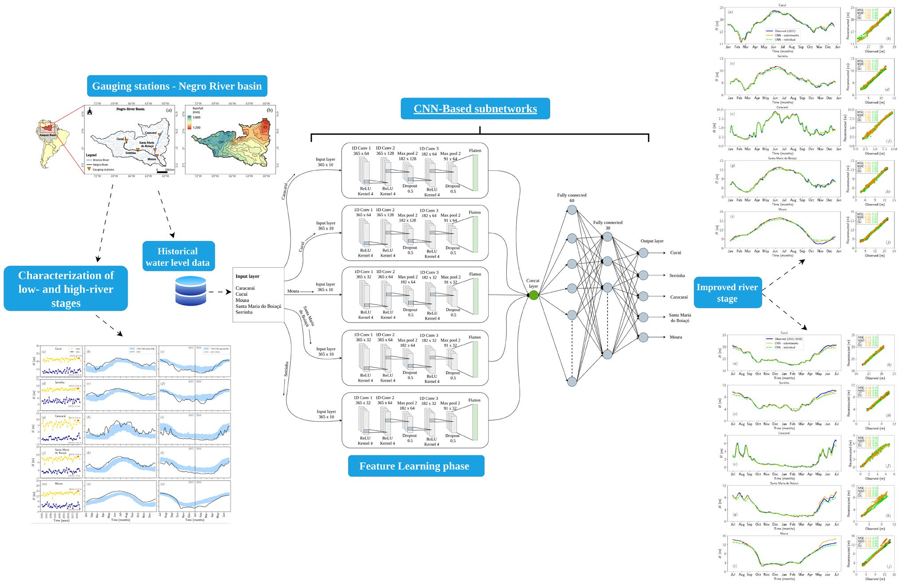
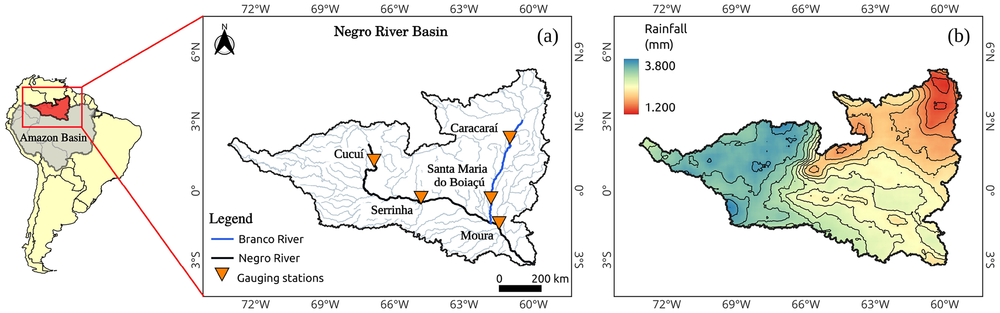
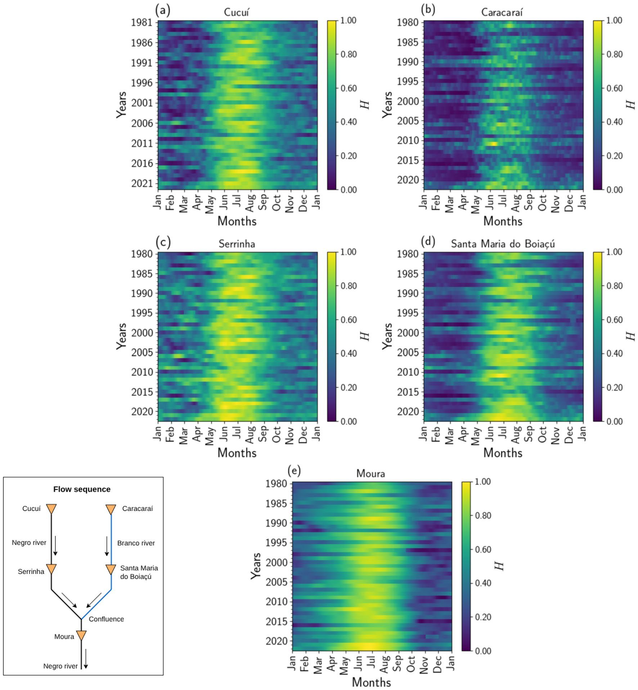
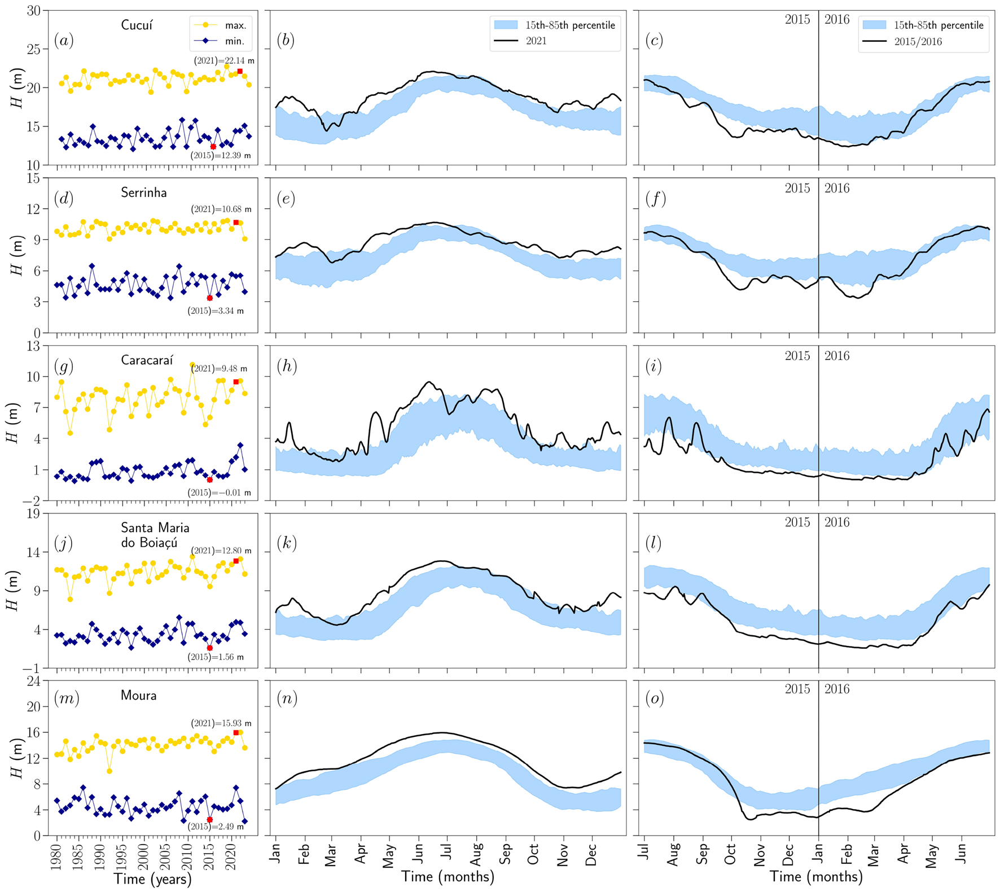
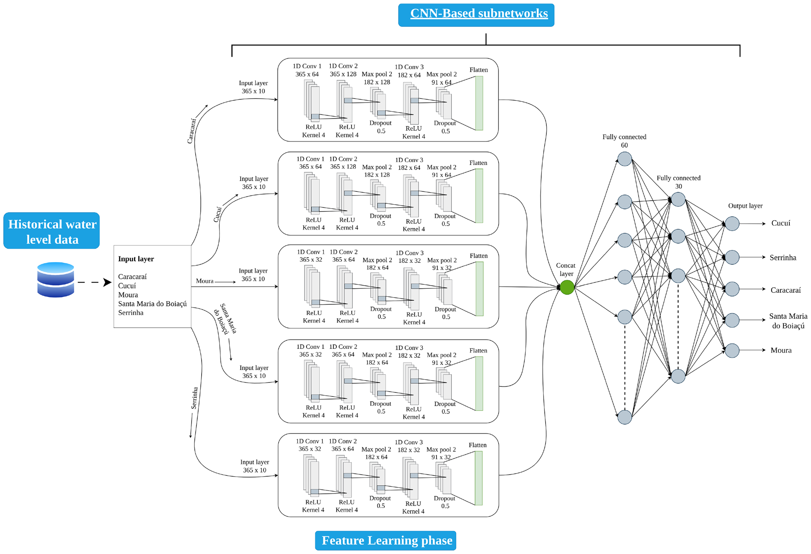
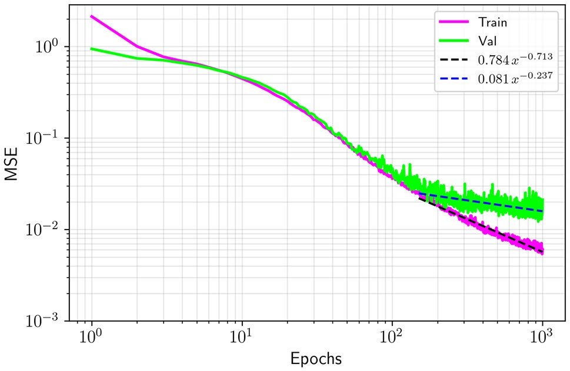
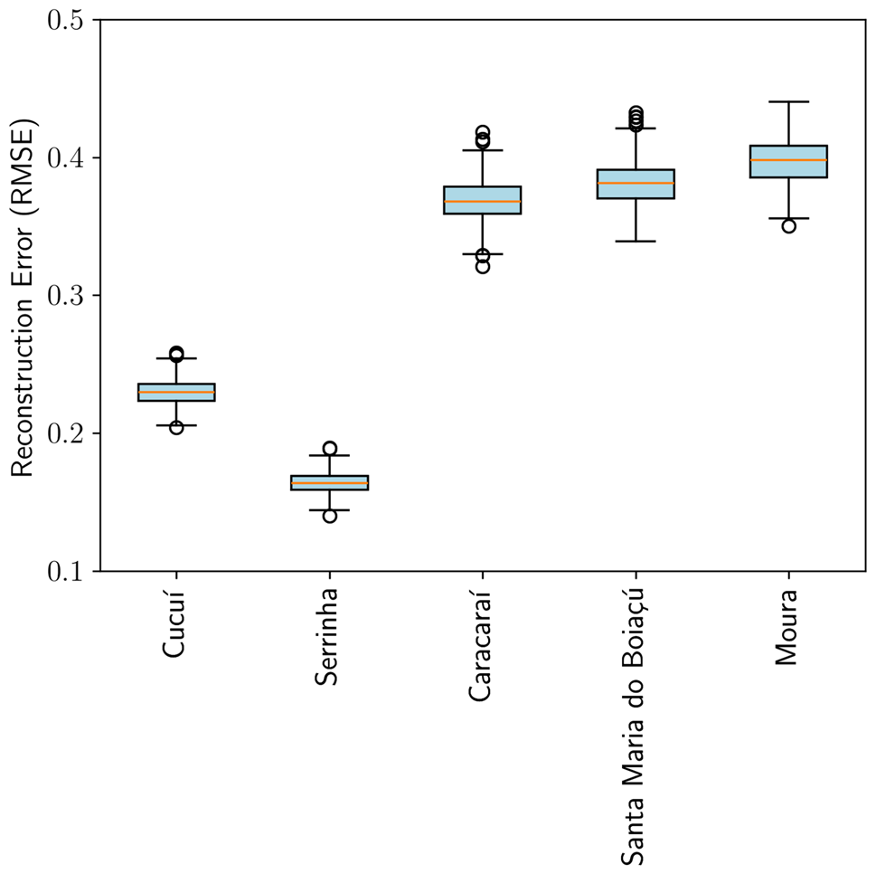
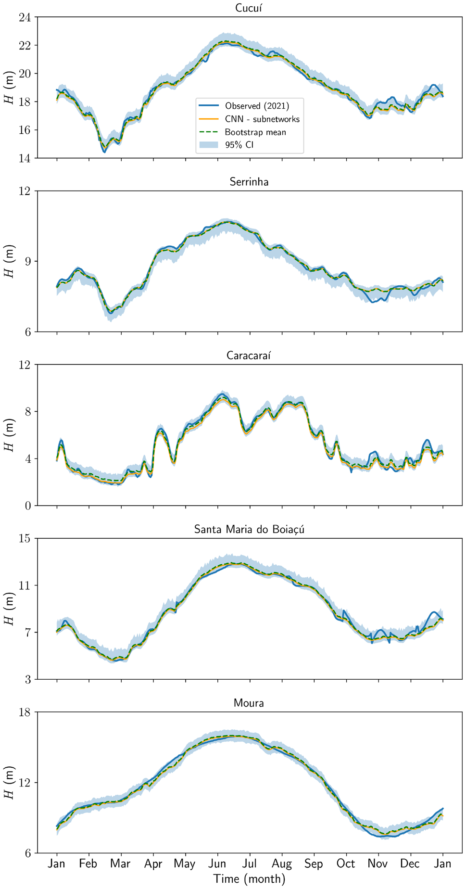
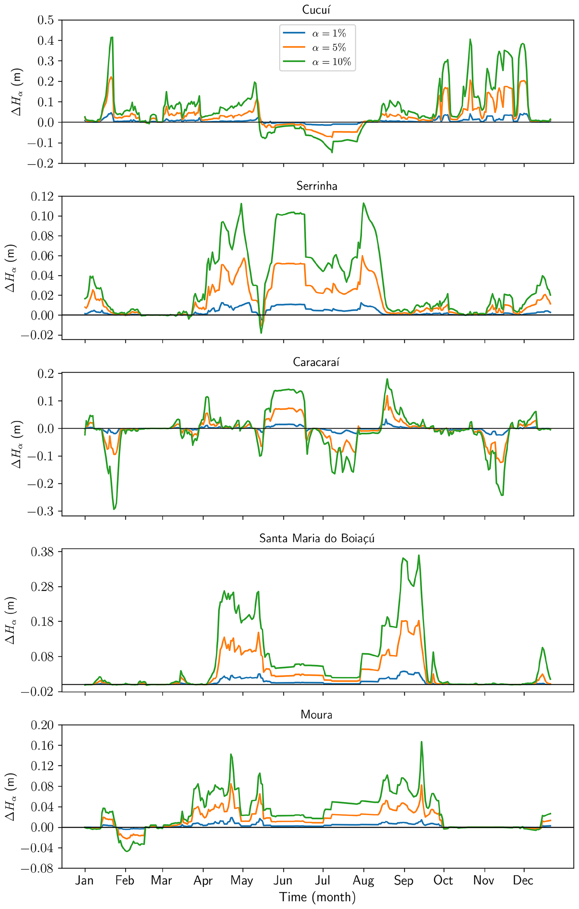
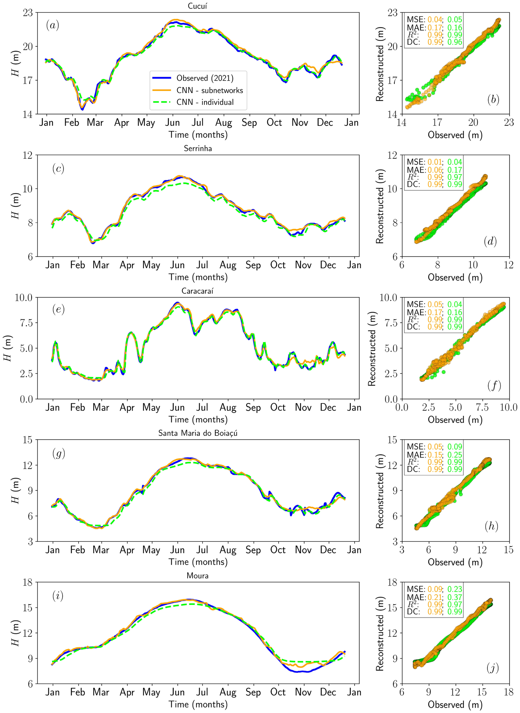
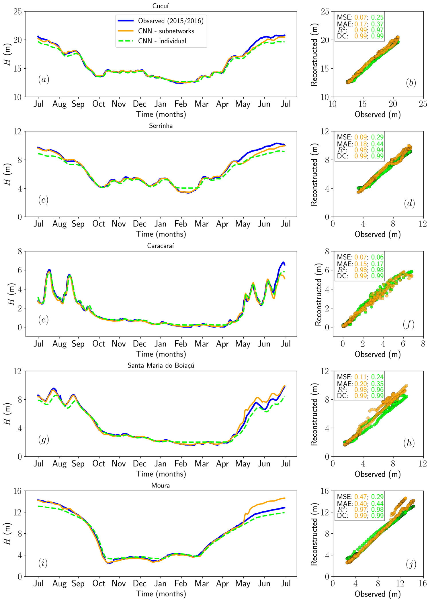
Methods
- multi-output CNN with station-specific subnets
- 1D convolutional layers with MaxPooling
- k-fold cross-validation (k=5)
- residual bootstrap uncertainty assessment (B=500)
- systematic amplitude perturbation sensitivity analysis
- MinMaxScaler normalization
- Adam optimizer
- L2 regularization
- dropout (rate=0.5)
- distance correlation (DC)
- mean squared error (MSE)
- mean absolute error (MAE)
- coefficient of determination (R²)
- sliding window input construction
Datasets
- Brazilian hidrometric network (ANA) water level records from Cucuí, Serrinha, Caracaraí, Santa Maria do Boiaçú, and Moura gauging stations (1980–2023)
- CHIRPS rainfall data (1981–2023)
Claims
- CNN-based subnetworks achieve very low reconstruction errors (MSE ≲ 0.09) and near-perfect distance correlation (DC ≈ 1.00) during the 2021 extreme flood in the Negro River basin.
- Subnet-based architectures outperform individually trained station-specific CNNs in capturing both local hydrological dynamics and basin-wide coherence.
- The model faithfully reproduces complex temporal patterns including repiquetes, sudden decreases, gradual recoveries, and flood peaks across heterogeneous hydrological regimes.
- The approach supports gap-filling, consistency checking, and early warning systems for flood and drought management in data-scarce basins.
- Integrating data from multiple gauging stations through shared subnetwork feature concatenation enhances generalization across the spatially diverse Negro River basin.